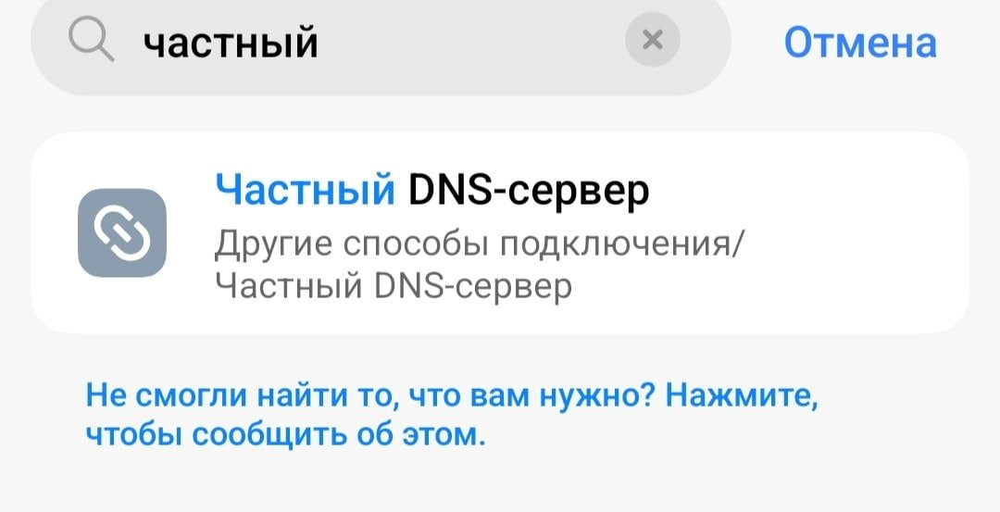
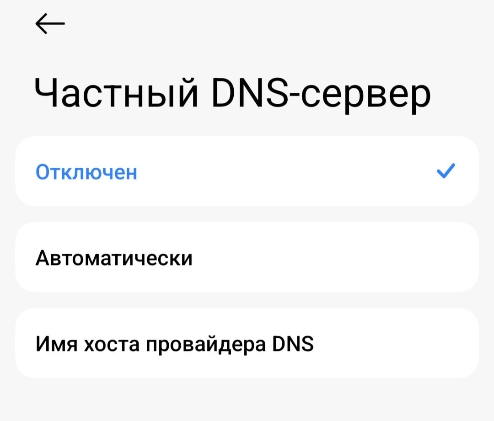
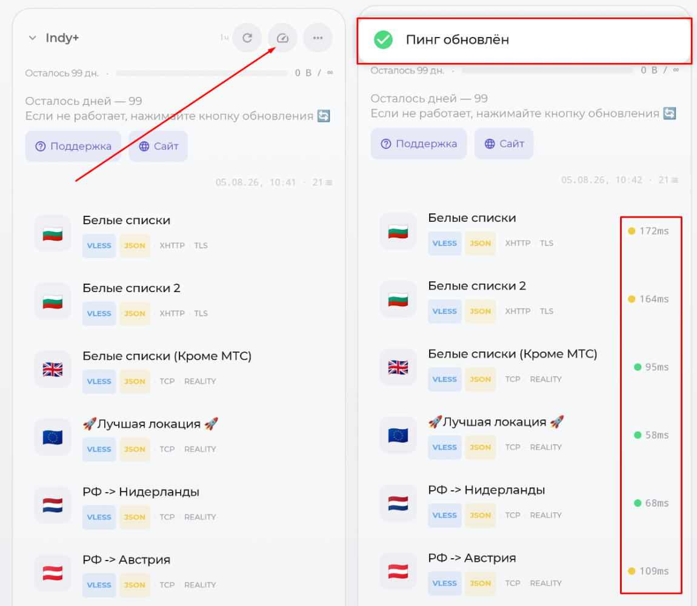

Решение проблем
Не добавляется ссылка в приложение (нет локаций для подключения) / Не обновляется по кнопке
- Установите актуальную версию программы, через которую выполняется подключение (Happ, incy и др.)
- Отключите другие VPN-приложения (если обновляете ссылку, есть смысл выключить VPN и в активном приложении)
- Смените сеть (с мобильного интернета на Wi-Fi или наоборот).
-
Если у вас Android, проверьте в настройках, выключен ли частный DNS-сервер.
Нажмите, чтобы посмотреть фото
Найдите этот пункт в настройках телефона. Обычно его можно найти через поиск.


-
Попробуйте альтернативное приложение (например, incy вместо Happ).
{kind=link}
{kind=link}
VPN подключён, но не работает (или все локации н/д)
- Проверьте, не используете ли вы программы типа Torrent (или иные, которые могут скачивать или раздавать файлы по протоколу BitTorrent). Для скачивания и раздачи торрентов предоставляется отдельная локация, на остальных локациях подобные соединения разрываются в связи с соблюдением европейскими странами законов об авторском праве.
- Установите актуальную версию программы, через которую выполняется подключение (Happ, incy и др.)
-
Нажмите кнопку обновления в приложении. Локации также обновляются автоматически раз в час, но ручное обновление позволяет сразу получить актуальную конфигурацию.
Нажмите, чтобы посмотреть фото
-
Проверьте пинг в приложении. Подключайтесь к серверу, где появились числа.
Нажмите, чтобы посмотреть фото
На скриншоте приложение incy, но аналогичным образом пинг проверяется и в других приложениях для подключения.

-
Если у вас Android, проверьте в настройках, выключен ли частный DNS-сервер.
-
Проверьте доступность интернета без VPN. Если не загружается, например, Google, значит, в вашем регионе могут действовать «белые списки». Используйте одноимённую локацию: трафик для неё уже входит в каждый тариф, а при необходимости его можно докупить. Подробнее: Кликните
- Проверьте скорость своего интернета без VPN. Возможно, он медленный сам по себе: Кликните
-
Если используете Happ, проверьте настройки приложения и отключите лишние ползунки (или используйте другое приложение, например, incy). Если принципиально использование Happ, используйте кнопку сброса в настройках приложения (нужно будет заново добавлять ссылки).
-
Отключите сторонние программы для обхода блокировок (GoodbyeDPI/zapret), если они есть. Они могут конфликтовать с VPN.
- Попробуйте альтернативное приложение (например, incy вместо Happ).
{kind=link}
{kind=link}
{kind=link}
{kind=link}
В Happ нет «Лучшей локации» и пометки JSON
Если в Happ одновременно отсутствуют локация «Лучшая локация» и пометка JSON, причина обычно в заданном вручную значении User-Agent.
- Откройте Happ → Настройки → Подписки и выберите нужную подписку.
- Полностью очистите поле User-Agent: оно должно быть пустым, без пробелов и других значений.
- Сохраните изменения, затем обновите подписку и список локаций.
Если это не помогло, сбросьте настройки Happ и заново добавьте персональную ссылку из бота. После сброса другие настройки приложения тоже потребуется задать заново.
Также можно воспользоваться приложением incy.
Высокий пинг в приложении
В Happ выберите via Proxy → HEAD с режимом keepalive, затем повторите проверку несколько раз. Выбирайте локацию с наименьшим стабильным пингом.
Подробнее о способе проверки и схемы: Кликните.
Достиг лимита устройств
Вы можете перейти в бота и удалить неиспользуемые устройства — одно или сразу все. После этого снова добавятся только те устройства, на которых вы подключитесь к VPN. Маршрут: «Меню» → «Подключить VPN» → «Мои устройства».
Если устройств всё равно не хватает, выберите платный тариф с более высоким лимитом: Базовый поддерживает 2 устройства, Оптимальный — 6, Максимальный — 15. На новом аккаунте во время пробного доступа за подписку на канал также доступно 2 устройства.
Российские приложения просят выключить VPN
Сначала подключитесь к локации «Лучшая локация». Если приложение всё равно просит выключить VPN, настройте обход, как показано на скриншоте. В примере приложение Happ, но похожим образом всё настраивается и в других подобных приложениях.
Ограничение на устройствах Apple
Раздельный обход приложений недоступен на iPhone, iPad, Mac и Apple TV.
Нажмите, чтобы посмотреть фото
{kind=link}
Не работает VPN на устройстве Huawei
На устройствах Huawei установите Happ или incy напрямую из APK. Официальные прямые загрузки находятся в разделе приложений: Кликните. Не устанавливайте и не запускайте Happ или incy через GBox: в таком варианте VPN-подключение работать не будет.
После прямой установки откройте обычную инструкцию подключения: Кликните.
Российские сайты просят выключить VPN
Подключитесь к локации «Лучшая локация» или «РФ → Зарубеж».
YouTube показывает рекламу
Подключитесь к локации «РФ → Зарубеж» или попробуйте другую обычную локацию.
Не хватает стабильности в играх
В первую очередь подключайтесь к локациям, отмеченным как игровые. Если таких локаций нет или они не работают, подключитесь к ближайшей к вам обычной локации.
Не работает конкретный сервис (ChatGPT, YouTube, Telegram).
Причины проблем с доступностью могут быть разные. Обычно помогает смена локации и перезапуск нужного приложения или сайта.
Если не открывается Gemini
Ошибка «Подозрительный трафик»
Если появляется сообщение:
Мы зарегистрировали подозрительный трафик, исходящий из вашей сети. Повторите запрос позднее.
- Полностью закройте вкладку с Gemini — простого обновления страницы недостаточно.
- По возможности смените VPN-локацию.
- Снова откройте сайт Gemini.
Gemini недоступен в вашем регионе
Если Gemini сообщает, что сервис недоступен в текущем регионе:
- Смените VPN-локацию.
- Обновите страницу.
В этом случае закрывать вкладку не требуется.
Если TikTok показывает только старые видео на iPhone
Выполняйте действия по порядку и остановитесь, когда свежие видео появятся.
Нажмите на кнопки ниже, чтобы открыть порядок действий.
1. Простая проверка
- Полностью закройте TikTok.
- Подключите VPN.
- Откройте TikTok только после подключения VPN.
- Попробуйте другую VPN-локацию.
- В Happ отключите маршрутизацию в настройках приложения, затем обновите приложение и список серверов.
- Попробуйте incy вместо Happ.
-
Очистите кэш TikTok:
TikTok → Профиль → ☰ → Настройки и конфиденциальность → Освободить место → Кэш → Очистить -
Перезапустите TikTok и iPhone. Проверьте наличие обновлений TikTok и iOS.
2. Отключение геолокации и SIM
-
Запретите TikTok доступ к геолокации:
Настройки iPhone → Конфиденциальность и безопасность → Службы геолокации → TikTok → Никогда -
Если в TikTok есть раздел геолокации, удалите сохранённые данные о местоположении.
- Полностью закройте TikTok.
- Извлеките физическую SIM-карту или временно отключите линию eSIM. Не удаляйте саму eSIM.
- Включите авиарежим, затем отдельно включите Wi-Fi.
- Подключите VPN и откройте TikTok.
3. Чистая переустановка
Сохраните черновики
Перед началом сохраните черновики на устройство или опубликуйте их с видимостью «Только вы». После удаления TikTok черновики могут исчезнуть.
-
Временно установите английский язык и регион страны выбранной VPN-локации:
Настройки → Основные → Язык и регион -
Отключите геолокацию для TikTok и SIM/eSIM.
- Включите авиарежим, затем Wi-Fi и VPN.
- Полностью удалите TikTok — выберите «Удалить приложение», а не «Выгрузить приложение».
- Перезагрузите iPhone.
- Снова включите Wi-Fi и VPN.
- Установите TikTok из App Store.
- В первый раз откройте TikTok только при подключённом VPN и отключённой SIM.
- Не разрешайте приложению доступ к геолокации.
- Сначала проверьте свежие видео без входа в аккаунт, затем войдите в свой аккаунт.
Если всё заработало, сначала верните прежние язык и регион и снова проверьте TikTok. Затем включите SIM и проверьте ещё раз.
4. Если не помогло
Проверьте:
- другой TikTok-аккаунт на том же iPhone;
- основной аккаунт на другом iPhone;
- TikTok без входа через приватную вкладку Safari при включённом VPN.
Если другой аккаунт работает, проблема связана с основным аккаунтом. В этом случае обратитесь в поддержку TikTok или используйте новый аккаунт.
Если браузерная версия работает, её можно использовать как альтернативу:
Safari → tiktok.com → Поделиться → На экран «Домой»
Если свежие видео открываются по прямым ссылкам, но лента «Для вас» остаётся старой:
Настройки TikTok → Предпочитаемый контент → Обновить ленту «Для вас»
Полный сброс iPhone, модифицированные версии TikTok и неизвестные IPA-файлы использовать не рекомендуется.
Нет кнопки «ТГ-прокси» или раздел недоступен
- Проверьте текущий тариф в «Меню». Веб-прокси входит только в Оптимальный и Максимальный тарифы. На Базовом, в том числе при пробном доступе на новом аккаунте, этой кнопки нет.
- Убедитесь, что дни подписки не закончились. Для продления или смены тарифа нажмите «Оплатить продление».
- После продления или смены тарифа заново откройте «Меню» → «ТГ-прокси».
Если подходящий тариф действует, а кнопки по-прежнему нет, бот пишет «Раздел временно недоступен» или не показывает кнопки «Подключить», обратитесь в поддержку. Наличие раздела также зависит от доступных серверов прокси. До восстановления используйте VPN.
Веб-прокси не подключается или работает нестабильно
- Обновите Telegram. Если ссылка из кнопки «Подключить» не открывается, убедитесь, что используете приложение с поддержкой WEB-прокси. Если ваш клиент этот формат не поддерживает, используйте VPN.
- Проверьте действующий тариф и срок доступа в боте. На Базовом тарифе и после окончания подписки веб-прокси недоступен.
- Если вы обновляли ссылки в боте, удалите старые записи прокси из Telegram и подключитесь по новым кнопкам.
- Если бот предлагает несколько веб-прокси, выберите другой в настройках Telegram. При наличии настройки «Автопереключение прокси» можно включить её.
- Попробуйте другую сеть: Wi-Fi вместо мобильного интернета или наоборот.
- Если ссылкой пользуются посторонние или есть подозрение на превышение лимита, отключите лишние подключения и при необходимости обновите ссылки в боте.
Для звонков в Telegram используйте VPN. Если в сети действуют «белые списки», подключайтесь к соответствующей VPN-локации. Если веб-прокси всё равно не работает, используйте VPN и обратитесь в поддержку.
Спустя время отключается VPN на iOS
Возможно, дело в лимите памяти, который выделяется на работающее приложение системой. Установите приложение incy. В нём есть специальная функция: Настройки > Расширенные настройки > Режим No Limit. Там же в настройках можно включить, чтобы в приложении incy на главном экране было видно, сколько памяти тратится.
Нажмите, чтобы посмотреть фото
{kind=link}
Также были случаи, когда помогало обновить iOS до актуальной версии. Если вы этого ещё не сделали, желательно обновиться.
Проблемы с оплатой
Решение проблем с оплатой описано здесь: Кликните